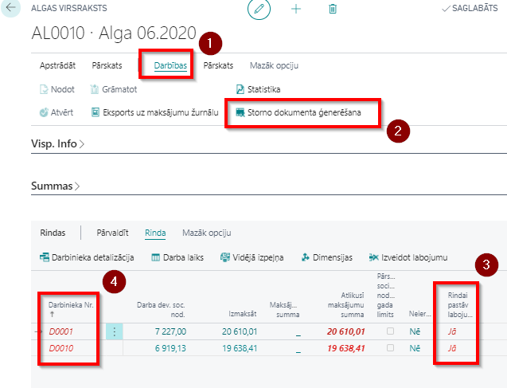
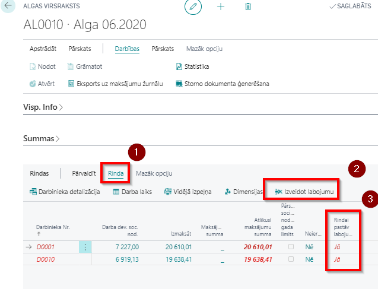

Labojumi un darbību atcelšana
Storno saraksts
Ja ir nepieciešams koriģēt aprēķinu jau iegrāmatotā/izmaksātā algu sarakstā, nodokļu summas, ienākumu summas, izmaksas summas un tamlīdzīgi, tad ir jāizmanto storno funkcionalitāte. Jo labojumu var veikt, tikai tad, kad iepriekšējais aprēķins ir stornēts. Visi izveidotie storno saraksti ir apkopoti reģistrā Storno virsraksts.
Pastāv dažādi stornēšanas veidi:
Visiem darbiniekiem algu sarakstā vienāda kļūda algu aprēķinā:
1) algu saraksta rīkjoslā klikšķina uz pogām Darbības ( ) - Storno dokumenta ģenerēšana (
) - Storno dokumenta ģenerēšana ( );
);
2) izleks rindu ģenerēšanas logs, kur nepieciešamības gadījumā iespējams iestatīt filtrus.
3) tiks saģenerē storno sarakstu, kurā viss aprēķins viens pret vienu ir anulēts. Storno saraksts ir jāiegrāmato!;
4) veic datu labošanu un sagatavo jaunu algas aprēķinu. Pirmā algas saraksta maksājumu summa tiks iekļauta nākamajā aprēķinā kā atvilkums.Pēc storno iegrāmatošanas algas saraksta cilnē Rindas stornētajiem ierakstiem tiks ielikta pazīme (
 ), ka rindai ir labojums un attiecīgie darbinieku kodi iezīmēti sarkani (
), ka rindai ir labojums un attiecīgie darbinieku kodi iezīmēti sarkani ( ). Nospiežot uz pazīmi Rindai pastāv labojums (), atvērsies storno saraksts, kurā viss aprēķins viens pret vienu ir anulēts.
). Nospiežot uz pazīmi Rindai pastāv labojums (), atvērsies storno saraksts, kurā viss aprēķins viens pret vienu ir anulēts.

Kļūda aprēķina algoritmā dēļ nepareizas nodokļa likmes, atvieglojuma apmēra utl.:
1) nomaina nodokļu, atvieglojumu utl. likmes;
2) izveido jaunu algu sarakstu, iepriekšējo sarakstu nestornējot un nelabojot;
3) klikšķina uz pogas Aprēķināt un rindu ģenerēšanas logā ieslēdz funkciju Veidot storno, ja pastāv aprēķins šajā mēnesī. Ja nepieciešams, filtrus izvēlas tādus pašus, kā algu sarakstā, kas jālabo;
4) sistēma sagatavos storno sarakstu, ko nepieciešams iegrāmatot. Pirmā algas saraksta maksājumu summa tiks iekļauta nākamajā aprēķinā kā atvilkums.Kļūda algas aprēķinā vienam vai vairākiem darbiniekiem:
1) algas saraksta cilnē Rindas iezīmē darbinieku (vai vairākus), kuriem nepieciešams labojums.
2) Rīkjoslā klikšķinot uz pogām Rinda () - Izveidot labojumu () rindiņa tiek atzīmēta kā labota .
3) Veic albojumus un sagatavo jaunu algu sarakstu, kur veic aprēķinu tikai labotam darbiniekam (vai vairākiem).

Tip
Ja sākotnējā algu saraksta izmaksa pirms storno saraksta veidošanas netika veikta (maksājums nav iegrāmatots), sistēma neatļaus eksportēt maksājumus, jo nākamajā algu sarakstā tiks ņemta vērā informācija par maksājumiem storno veidošanas brīdī.
Gadījumā, ja algas aprēķini ir stornēti, un jauns algas aprēķins šajā mēnesī nav izveidots, tiek atvērti visi šā mēneša ieraksti labošanai: komponenšu reģistros, prombūtnes reģistrā un uzskaitē.
Izmaiņas prombūtnē
Rekomendējam visas prombūtnes korekcijas veikt tekošajā mēnesī, stornējot iepriekšējo algu sarakstu!
Ar novēlošanos saņemta slimības lapa
Piemērs: aprēķināta un izmaksāta alga par 07.2020. No darbinieka ir saņemta slimības lapa par periodu 27.07.2020 - 05.08.2020.
Variants - veic algas aprēķina korekciju tekošajā periodā 07.2020.
1) algas aprēķina sarakstā 07.2020 izveido labojumu attiecīgā darbinieka rindiņai. Iegrāmato storno sarakstu;
2) Prombūtnes reģistrā ievada jaunu slimības lapas ierakstu, norādot algas aprēķina mēnesi 07.2020.;
3) sagatavo jaunu algas sarakstu par 07.2020 un cilnē Rindas iekļauj tikai to darbinieku, kam jāveic labojums. Jāņem vērā, ja darbinieka nostrādāto stundu ievadei ir izmantots Stundu reģistrs, sistēma neveic darba algas komponentes pārrēķinu, stundu skaits jākoriģē manuāli;
4) atkarībā no rezultāta, jāveic piemaksa (funkcija Eksports uz maksājumu žurnālu) vai atvilkums (tiks iekļauts 08.2020 algas aprēķinā).Variants - algu koriģē nākamajā periodā 08.2020.
1) Prombūtnes reģistrā ievada jaunu slimības lapas ierakstu, norādot algas aprēķina mēnesi 08.2020.
2) Prombūtnes kartiņā klikšķiniet uz pogas Pārrēķināt. Prombūtņu sarakstā šim ierakstam parādās atzīme Pārrēķināts. Pārrēķina rezultātā sistēma izveido tekošā perioda (08.2020.) komponenšu reģistru ar iepriekšējā mēneša darba algas koriģēšanas ierakstiem.
3) perioda beigās veiciet algas aprēķinu par tekošo mēnesi. Ienākuma aprēķinā būs iekļautas iepriekšējā mēneša korekcijas.
Ar novēlošanos saņemtas vairākas slimības lapas
Piemērs: aprēķināta un izmaksāta alga par 07.2020. No darbinieka ir saņemta slimības lapa A par periodu 15.07.2020 - 24.07.2020 un B lapa par periodu 25.07.2020 - 03.08.2020. Pārrēķins tiks veikts nākamajā mēnesī - 08.2020.
1) Prombūtnes reģistrā ievada A-lapu, norādot algas aprēķina mēnesi 08.2020. Nepārrēķina!
2) Prombūtnes reģistrā ievada B-lapu, norādot algas aprēķina mēnesi 08.2020. Klikšķina uz pogas Pārrēķināt.
Kad ievadītas visas prombūtnes, vienu reizi nospiežot Pārrēķināt, sistēma apkopo informāciju par visām prombūtnēm, un komponenšu reģistrā tiek veikts aprēķins, ņemot vērā visas prombūtnes. Gadījumā, ja katrai prombūtnei tiks veikts pārrēķins, tad rezultātā izveidosies ieraksti dubultā, tāpēc pārrēķins ir jāveic tikai vienu reizi.
Darbinieks saslimst atvaļinājuma laikā
Piemērs: aprēķināta un izmaksāta alga par 07.2020. Darbiniekam bija piešķirts atvaļinājums 15.07.2020 - 31.07.2020. Darbinieks saslimis atvaļinājum laikā un iesniedzis slimības lapu A par periodu 19.07.2020. - 21.07.2020. un B-lapu par periodu 22.07.2020. - 31.07.2020. Korekcija tiks veikta nākamajā mēnesī - 08.2020.
1) Prombūtnes reģistrā ievada A-lapu, norādot algas aprēķina mēnesi 08.2020. Nepārrēķina!
2) Prombūtnes reģistrā ievada B-lapu, norādot algas aprēķina mēnesi 08.2020. Nepārrēķina!
3) Prombūtnes reģistrā ievada atvaļinājumu 15.07.2020. - 18.07.2020., norādot algas aprēķina mēnesi 08.2020. Nepārrēķina!
4) atver sākotnējā atvaļinājuma prombūtnes kartiņu un to atceļ klikšķinot uz pogas Atcelt prombūtni. Atcelšanas rezultātā, prombūtnes kods ATVAL tiks nomainīts uz kodu KOREKCIJA, kā arī tiks izveidoti sistēmas radīti korekcijas ieraksti 08.2020 Komponenšu reģistrā (darba algas izmaiņas (ja ir izmaiņas), izmaksātā atvaļinājuma nauda). Šī informācija tiks iekļauta 08.2020 aprēķinā.
Darbinieks tiek atsaukts no atvaļinājuma
Piemērs: Darbiniekam piešķirts atvaļinājums 15.07.2020 - 31.07.2020. Aprēķināta un izmaksāta atvaļinājuma nauda un alga par 07.2020. Pēc tam, izradās, ka darbinieks ir strādājis 20.07.2020. - 21.07.2020. Korekcija tiks veikta nākamajā mēnesī - 08.2020.
1) Prombūtnes reģistrā ievada atvaļinājumu 15.07.2020. - 19.07.2020., norādot algas aprēķina mēnesi 08.2020. Nepārrēķina!
2) Prombūtnes reģistrā ievada atvaļinājumu 22.07.2020. - 31.07.2020., norādot algas aprēķina mēnesi 08.2020. Nepārrēķina!
3) atver sākotnējā atvaļinājuma prombūtnes kartiņu un to atceļ klikšķinot uz pogas Atcelt prombūtni. Atcelšanas rezultātā, prombūtnes kods ATVAL tiks nomainīts uz kodu KOREKCIJA, kā arī tiks izveidoti sistēmas radīti korekcijas ieraksti 08.2020 Komponenšu reģistrā;
4) ja darbiniekam faktiski nostrādātās stundas tiek reģistrētas Stundu uzskaitē, tad ievada papildus nostrādāto stundu skaitu.
Pārrēķina rezultāts tiks iekļauts 08.2020 algu sarakstā, kļūdaino un iegrāmatoto 07.2020. algas aprēķinu atstājot bez izmaiņām. Sistēma ar mīnus zīmi noņems aprēķināto atvaļinājuma naudu un pieskaitīs pamatalgu par šīm dienām. Summas tiks attiecinātas uz periodiem, par kuriem tās ir aprēķinātas.
Prombūtnes sākuma vai beigu datuma izmaiņas
Ja darbiniekam ir aprēķināta prombūtne, bet pēc algas aprēķina veikšanas tiek atklāts, ka prombūtnes periods nav bijis korekts, tad šo ir iespējams koriģēt nākamajā periodā:
1) jāievada pareiza prombūtne, norādot aprēķina mēnesi, kurā tiek veikts labojums;
2) jāveic iepriekš nekorekti ievadītās prombūtnes atcelšana, klikšķinot prombūtnes kartiņā uz pogas Atcelt prombūtni;
3) jāveic tekošā perioda algas aprēķins. Tekošajā algu sarakstā tiek ieliktas summu atšķirības starp nekorekto un korekto prombūtni ar sistēmas ģenerētā komponenšu reģistra palīdzību.